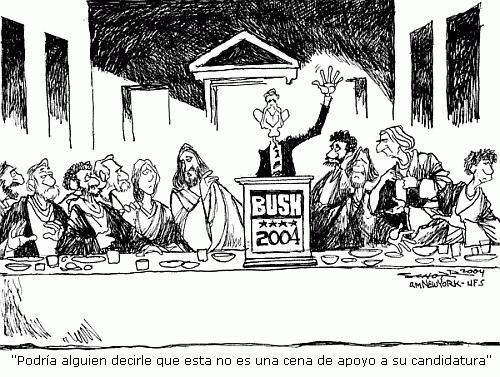

El presidente Bush, uno de los mandatarios más cuestionados en la historia estadounidense reciente. Una de las cuestiones más curiosas es que él fue reelegido con el apoyo de los evangélicos fundamentalistas. Tal afirmación está fundamentada en la información de cadenas de televisión que mantuvieron una posición neutra y por sitios cristinos de Internet. La cadena de noticias CNN en español decía el día de las elecciones: “Es cierto que los que van a la Iglesia votaron por Bush, mientras que los seculares prefirieron a Kerry”. Portales cristianos como mercadocristiano en su sección de noticias presentaron información congruente con ésta afirmación. Allí se podía leer “Fundamentalistas evangélicos propiciaron la reelección de Bush”.
Una campaña electoral con tintes evangelistas
En “El correo digital” de 25/X/04 se podía leer un reportaje sobre la alianza entre la candidatura de Bush con los cristianos fundamentalistas. En este artículo decía Betty W: «Sus discursos están cargados de palabras clave que sólo tienen sentido para los evangelistas que se saben la Biblia de memoria». Betty W. fue críada en un hogar evángelico y por esto afirma que cuando Bush decía que «Un comandante en jefe debe mantenerse en sus principios, no en las arenas movedizas de la conveniencia política» los cristianos veían una analogía con la parábola contada por los evangelios en las que el necio construyó sobre la arena y el sabio sobre la roca.
La idea que la candidatura de Bush está permeada de Biblia y conservadurismo no es solo la impresión de sus críticos. Durante una visita a Nueva Jersey la corresponsal noruega Kristin Nilsen quedó asombrada al ver que los partidarios evangélicos de Bush decían “amén” cuando Bush hablabá, tal como si fuese un partor más. Kristien Nilsen asombrada afirmó: «Era escalofriante ver quiénes son sus seguidores».
Karl Rove, asesor de la campaña repúblicana, ha dicho públicamente que las elecciones de 2000 obtuvieron resultados tan estrechos porque cuatro millones de fundamentalistas no fueron a votar. Rove contaba con 19 millones de esos votos, pero sólo obtuvo 15. Esto explica porque Bush a buscado congraciarse con la parte más radical del cristianismo protestante.
A fin que las iglesias no pierdan la exención de impuestos de la que gozan deben mantenerse al margen de apoyar abiertamente a un político. Sin embargo, los fundamentalistas distribuyeron 35 millones de folletos para «ayudar» a decidir el voto. En las elecciones del 2000 se distribuyeron 70 millones, la diferecia radica que para las elecciones del 2004 los folletos se distribuyeron en los 17 estados, que por su número de votos electorales, ayudarían a definir la contienda electoral.
Pero no solo folletos se distribuyeron. Unido al material impresó se anexó un documental en DVD titulado «Fe en la Casa Blanca», donde se narra la conversión de Bush a la Iglesia Metodista que le apartó del alcoholismo. Los fundamentalistas ven la conversión como “una manifestación” del poder de Dios y por eso hay muchos de ellos que ven a Bush como “un enviado de Dios”. El documental recrea “el nuevo nacimiento” de Bush en una playa al ser bautizado por el teleevangelista Billy Graham. El Partido Republicano exhibió el documental dos veces diarias durante la Convención de su partido en Nueva York y envió 300.000 copias a las iglesias.
Sembró analogías mesíanicas y cosechó votos
Distintas encuestas hechas en los Estados Unidos atribuyen la reelección del presidente George W. Bush al gran apoyo de los evangélicos fundamentalistas, esto es especialmente cierto en los 11 estados que han aprobado enmiendas constitucionales contra el matrimonio gay.
Los ministros protestantes que decidieron apoyar a Bush consideran que es importante llevar su agenda moral a la política norteamericana. A estos les horroriza pensar que los EEUU se está convirtiendo en un país más plural y menos cristiano. Con frecuencia se puede escuchar en sus programas televisivos expresiones tales como “santidad de la vida humana” al referirse a la prohibicion de las investigaciones con células madre y a la prohibición del aborto aún en las primeras semanas; “la santidad del matrimonio” para hablar de la prohibición al reconocimiento legal de las parejas homosexuales y “el reconocimiento público de Dios” para hacer alusión a la reinserción de la oración en las escuelas públicas del país.
Los resultados por estados dejó ver que Bush ganó en aquellos estados donde los evangélicos están mejor establecidos. En el estado de Colorado, donde los demócratas esperaban ganar, un 25% del electorado es evangélico y el 85 por ciento votó por Bush. En Iowa, donde Bush obtuvo una estrecha victoria el 33% de los votantes son evangélicos. En los EEUU el 22% se define como cristiano fundamentalista.

¿Quienes son los fundamentalistas?
El fundamentalismo cristiano apareció a finales del siglo XIX y principios del XX. La conferencia realizada en 1876 con participación de representantes de diferentes denominaciones se opusó a los estudios que en la fecha se adelantaban sobre historicidad de la Biblia. En 1909 se publicó una serie de 12 libros llamados Los Fundamentos en los que se exponen los principios de este movimiento. En resumidas cuentas los fundamentalistas evangélicos tienen en común defender ciegamente la infabilidad de la Biblia, por tal razón se explica el rechazo a la teoría de la evolución (tanto biológica, prebiótica y del Universo), el rechazo a la crítica bíblica. La defensa de la Biblia como autoridad incustionable hace que los fundamentalistas esten de acuerdo en defender el nacimiento virginal de Jesús, su divinidad, muerte expiatoria y la resurrección de su cuerpo, la creencia en el segundo regreso de Cristo a la Tierra y en el inminente fin del mundo. Recientemente la lucha por prohibir la legalización de las uniones civiles entre personas del mismo sexo ha llegado a ser un componente importante de sus agendas.
El fundamentalismo religioso se desarrolló más facilmente en los estados del sur, y llevó al estado de Tenneesse a aprobar una ley que prohibía la enseñanza de la teoría de la evolución, situación que desembocó en el famoso juicio contra el profesor Jhon Thomas Scopes en 1925. Esta ley fue declarada inconstitucional por el tribunal supremo de los Estados Unidos en 1968. Sin embargo, los esfuerzos de los fundamentalistas por impedir la enseñanza de la biología evolutiva han continuado en nuestros días con los proyectos de “trato igualitario” entre la dos teorías en las aulas de clase y la reciente incorporación de la “teoría del diseño inteligente”.
Algunos protestantes norteamericanos han apostado por apoyar la separación entre la Iglesia y el Estado, como es el caso de los adventistas. No así los evángelicos más recalcitrantes. Ellos creen que precisamente por no participar activamente en la política se ha prohibido el rezo en las escuelas públicas y se ha facilitado la enseñanza de la biología evolutiva en las clases de ciencias. Estos creyentes, decididos a dar la batalla, han optado por aliarse a los republicanos para que estos transformen en leyes su agenda moral. A cambio de votos incondicionales esperan que los republicanos cumplan con sus promesas de impedir las investigaciones con células madre, revertir la ley del aborto, suprimir la enseñanza del darwinismo, prohibir los matrimonios homosexuales y restablecer los rezos en las escuelas.
Conclusión
En la reciente campaña electoral (2004) el factor religioso fue crucial en los resultados que llevaron al conservador George Bush a permanecer en la Casa Blanca. Es importante reflexionar si en los EEUU se está perdiendo la separación entre la Iglesia y el Estado, vital para el pluralismo y la convivencia. La historia nos muestra que el matrimonio entre política y religión ha resultado desastroso… ¿Recuerdan la Ginebra de Calvino o el Afganistán de los talibanes?.
Volver a la sección Sociedad y religión
Comentarios
Comments powered by Disqus